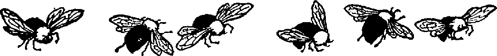

About
My name is Mariusz.
You can call me Victor (it's my second name).
I am a designer generalist with a strong portfolio career.
Currently I am building tosee and taking part in building sota image generation models for [[nda]].
Previously I've been building things like this web3 gaming platform.
Before the pandemy I've had a chance to be a part of the amazing teams that made migration possible while Starwood was acquired by Marriott.
Even before that I worked for Agora Publishing and a postproduction company Lightcraft as a CG Generalist.
I've also extensively "freelanced".
This led me to places I could never dream of. While doing many seemingly unrelated things. Like carpentry, fittings, kitchen design, illustrations, print, drawings, game design, painting and some writing. I play on electric bass too .
I do not have one resume.
But if you'd like one, then contact me and allow me to know how can I assist you.

About this Site
This site is a simple gizmo that allows me to write in Obsidian and push it to git. There are many similar solutions out there like Hugo for example.
Yet these come in flavours and complexity that do not really work for my simple needs.
prev | home | next